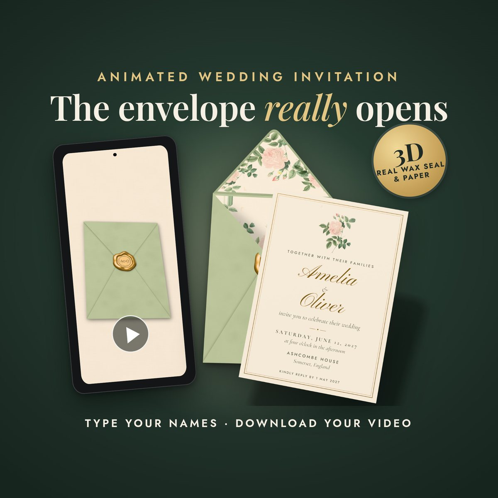
← all 20 listings · Animated Wedding Invitations
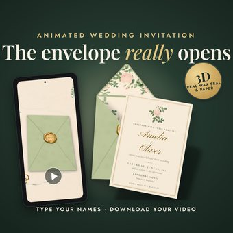
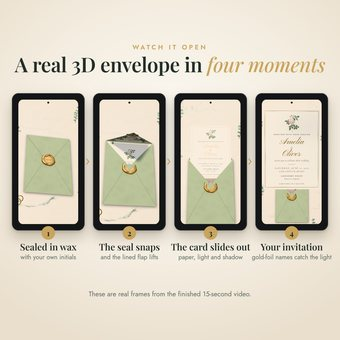
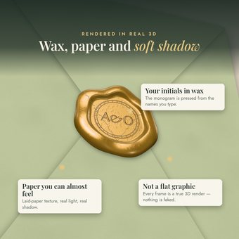
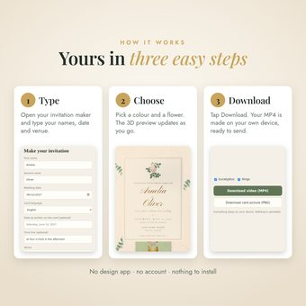
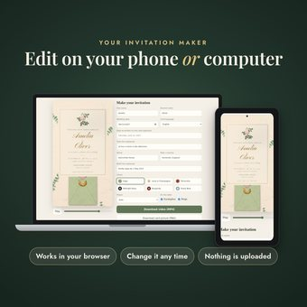
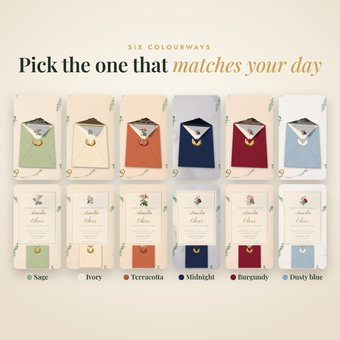
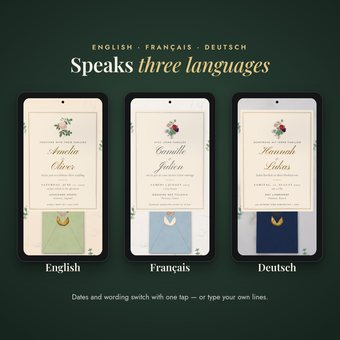
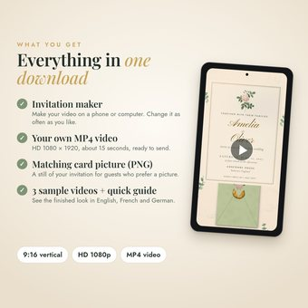
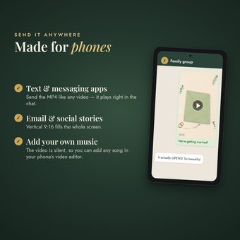
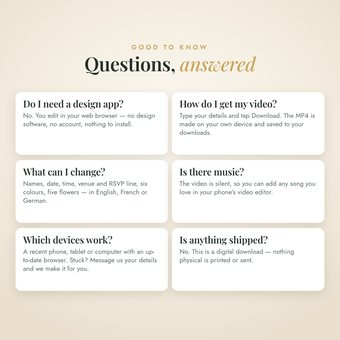
▶ video
Animated wedding invitation video: a sage green 3D envelope with floral liner opens and an ivory invitation with gold names rises out, next to a phone showing the sealed envelope with a gold wax seal.
TheCoolShopCo
Animated Wedding Invitation Video, 3D Envelope Opening with Wax Seal, Editable Digital Wedding Invite, Sage Green Floral Video Evite
$19.99
Digital download — 6 file(s) · Designed by TheCoolShopCo
Try the invitation maker (live) ↗Buy it nowAdd to basket
Files you get
- Start Here guide (2 pages): how to open the invitation maker, make the video, send it; help route (Start-Here-Wedding-Invitation-Video.pdf)
- Offline copy of the invitation maker (one self-contained HTML file + read-me). Opens in a browser on a computer. (wedding-invitation-maker.zip)
- Sample video, English wording, Sage (1080x1920, 15 s) (sample-video-english-sage.mp4)
- Sample video, French wording, Dusty Blue (1080x1920, 15 s) (sample-video-french-dusty-blue.mp4)
- Sample video, German wording, Midnight Navy (1080x1920, 15 s) (sample-video-german-midnight.mp4)
- The invitation maker itself — host this file (any static host) and put its URL in _kit/wedding/kit.config.json, then rebuild the PDF. Not uploaded to Etsy as-is. (index.html)
An animated wedding invitation your guests will watch twice: a real 3D envelope with your initials pressed into the wax seal. The seal snaps, the lined flap opens and your invitation slides out and rises to the screen.
Every frame of this animated wedding invitation video is a true 3D render — real paper texture, real light, soft shadows and gold-foil names that catch the light. No flat stickers, no stock clip of someone else's envelope.
WHAT YOU GET
• Your invitation maker — a private web page (plus an offline copy in a ZIP) where you type your details and download your video
• Your own MP4 video: vertical 9:16, HD 1080 × 1920, about 15 seconds, no watermark
• A matching picture of your card (PNG) for guests who prefer a still image
• 3 finished sample videos (English, French, German) so you can see the real result before you start
• A short Start Here guide (PDF)
FEATURES
• Real 3D envelope, wax seal, liner and card — rendered with real lighting and shadows
• Your initials in the wax seal, made automatically from the names you type
• Change names, date, time, venue and RSVP line
• 6 colourways: Sage, Ivory & Champagne, Terracotta, Midnight Navy, Burgundy, Dusty Blue
• 5 vintage botanical flowers (or a clean monogram with no flower)
• Card wording in English, French or German — the date is written out for you in the language you pick
• Make as many versions as you like (one for family, one for friends, one in another language)
• No design app, no account, nothing to install
HOW IT WORKS (3 STEPS)
1. Open your invitation maker from the Start Here guide.
2. Type your names, date and venue, pick a colour and watch the 3D preview update.
3. Tap "Download video". The MP4 is made on your own device and saved to your downloads — then send it to your guests.
WORKS WITH
• A recent phone, tablet or computer with an up-to-date web browser (Chrome or Edge recommended)
• The finished MP4 plays on every phone and computer and can be sent by text, messaging apps, email or posted as a story
• Rather not do it yourself? Send us your details in an Etsy message and we will make the video for you and send it within 24 hours.
FAQ
Is there music? — The video is silent, so you can add any song you love in your phone's video editor before you send it.
Can I change the wording? — Yes: every line on the card can be edited, and the top line and invitation line have ready-made wording in three languages.
Can I change the layout, fonts or add a photo? — No. The layout and typefaces are part of the design. You change the words, the colours and the flower.
Can I print it? — This listing is a video invitation. The included PNG picture of the card is made for screens.
Is my information uploaded anywhere? — No. The video is made inside your own browser; your names and details never leave your device.
How long is the video? — About 15 seconds: roughly 8 seconds of envelope opening, then your invitation is held on screen so guests can read it (they can also pause).
DELIVERY
This is an instant digital download. Nothing is shipped. After payment your files are available in Purchases and reviews on Etsy (and by email): the Start Here PDF, the invitation maker (ZIP) and the sample videos. Colours can look slightly different from screen to screen. Because the files are delivered instantly, digital items cannot be returned — but if anything does not work for you, message us and we will put it right.
Designed by TheCoolShopCo. Some design elements were created with the help of AI tools and finished by hand.
Tags (13)
Title 132/140 chars · main keyword: animated wedding invitation · materials: MP4 video, Web browser editor, PNG, PDF
FR translation (shown to French shoppers)
Faire-part mariage animé en vidéo, enveloppe 3D qui s’ouvre avec cachet de cire, invitation mariage digitale à personnaliser
Un faire-part de mariage animé que vos invités regarderont deux fois : une vraie enveloppe en 3D, vos initiales dans le cachet de cire. Le cachet se brise, le rabat doublé s’ouvre et votre faire-part glisse hors de l’enveloppe jusqu’à l’écran.
Chaque image de cette vidéo est un vrai rendu 3D — texture du papier, lumière, ombres douces et prénoms en dorure qui accrochent la lumière.
CE QUE VOUS RECEVEZ
• Votre créateur de faire-part — une page web privée (et une copie hors ligne dans un ZIP) où vous saisissez vos informations et téléchargez votre vidéo
• Votre vidéo MP4 : verticale 9:16, HD 1080 × 1920, environ 15 secondes, sans filigrane
• L’image assortie de votre carte (PNG)
• 3 vidéos d’exemple terminées (français, anglais, allemand)
• Un petit guide « Commencez ici » (PDF)
CARACTÉRISTIQUES
• Enveloppe, cachet de cire, doublure et carte en vraie 3D, avec lumière et ombres réelles
• Vos initiales dans le cachet, créées automatiquement à partir de vos prénoms
• Modifiez prénoms, date, heure, lieu et ligne de réponse
• 6 couleurs : Sauge, Ivoire & Champagne, Terracotta, Bleu nuit, Bordeaux, Bleu poudré
• 5 fleurs botaniques anciennes (ou un monogramme sans fleur)
• Texte de la carte en français, anglais ou allemand — la date s’écrit toute seule dans la langue choisie
• Autant de versions que vous voulez
• Aucun logiciel de création, aucun compte, rien à installer
COMMENT ÇA MARCHE (3 ÉTAPES)
1. Ouvrez votre créateur de faire-part depuis le guide.
2. Saisissez vos prénoms, la date et le lieu, choisissez une couleur : l’aperçu 3D se met à jour.
3. Touchez « Télécharger la vidéo ». Le MP4 est créé sur votre propre appareil — il ne reste qu’à l’envoyer.
COMPATIBILITÉ
• Téléphone, tablette ou ordinateur récent avec un navigateur à jour (Chrome ou Edge recommandé)
• La vidéo MP4 se lit sur tous les téléphones et s’envoie par SMS, messagerie, e-mail ou en story
• Vous préférez qu’on s’en occupe ? Envoyez-nous vos informations par message Etsy : nous créons la vidéo et vous l’envoyons sous 24 heures.
QUESTIONS FRÉQUENTES
Y a-t-il de la musique ? — La vidéo est muette : ajoutez la chanson de votre choix dans l’éditeur vidéo de votre téléphone.
Puis-je changer la mise en page ou ajouter une photo ? — Non. Vous modifiez les textes, les couleurs et la fleur ; la mise en page fait partie du design.
Mes informations sont-elles envoyées quelque part ? — Non. La vidéo est créée dans votre navigateur ; rien ne quitte votre appareil.
LIVRAISON
Téléchargement numérique immédiat. Aucun envoi postal. Après le paiement, vos fichiers sont disponibles dans vos achats Etsy. Les couleurs peuvent varier légèrement d’un écran à l’autre. Un souci ? Écrivez-nous, nous trouverons une solution.
Designed by TheCoolShopCo. Some design elements were created with the help of AI tools and finished by hand.
DE translation (shown to German shoppers)
Animierte Hochzeitseinladung als Video, 3D Umschlag öffnet sich mit Wachssiegel, digitale Einladung zur Hochzeit zum Selbstgestalten
Eine animierte Hochzeitseinladung, die eure Gäste zweimal ansehen: ein echter 3D-Umschlag mit euren Initialen im Wachssiegel. Das Siegel bricht, die gefütterte Klappe öffnet sich und eure Einladung gleitet heraus bis vor die Kamera.
Jedes Bild dieses Videos ist ein echtes 3D-Rendering — Papierstruktur, Licht, weiche Schatten und Namen in Goldfolie, die das Licht einfangen.
DAS BEKOMMT IHR
• Euren Einladungs-Editor — eine private Webseite (plus Offline-Kopie als ZIP), auf der ihr eure Daten eintippt und euer Video herunterladet
• Euer eigenes MP4-Video: Hochformat 9:16, HD 1080 × 1920, ca. 15 Sekunden, ohne Wasserzeichen
• Das passende Bild eurer Karte (PNG)
• 3 fertige Beispielvideos (Deutsch, Englisch, Französisch)
• Eine kurze Anleitung „Hier starten“ (PDF)
DETAILS
• Umschlag, Wachssiegel, Futter und Karte in echtem 3D mit echtem Licht und Schatten
• Eure Initialen im Siegel — automatisch aus euren Vornamen
• Namen, Datum, Uhrzeit, Ort und Rückmelde-Zeile ändern
• 6 Farbwelten: Salbei, Elfenbein & Champagner, Terrakotta, Nachtblau, Bordeaux, Taubenblau
• 5 historische botanische Blumen (oder ein schlichtes Monogramm ohne Blume)
• Kartentext auf Deutsch, Englisch oder Französisch — das Datum wird in der gewählten Sprache ausgeschrieben
• So viele Versionen, wie ihr möchtet
• Kein Design-Programm, kein Konto, keine Installation
SO GEHT’S (3 SCHRITTE)
1. Öffnet euren Einladungs-Editor über die Anleitung.
2. Namen, Datum und Ort eintippen, Farbe wählen — die 3D-Vorschau passt sich sofort an.
3. Auf „Video herunterladen“ tippen. Das MP4 entsteht direkt auf eurem Gerät — fertig zum Verschicken.
FUNKTIONIERT MIT
• Aktuellem Handy, Tablet oder Computer mit aktuellem Browser (Chrome oder Edge empfohlen)
• Das fertige MP4 läuft auf jedem Handy und lässt sich per Nachricht, Messenger, E-Mail oder als Story verschicken
• Lieber machen lassen? Schickt uns eure Daten per Etsy-Nachricht — wir erstellen das Video und senden es innerhalb von 24 Stunden.
HÄUFIGE FRAGEN
Gibt es Musik? — Das Video ist ohne Ton, damit ihr euer Lieblingslied im Video-Editor eures Handys hinzufügen könnt.
Kann ich Layout oder Schrift ändern oder ein Foto einfügen? — Nein. Ihr ändert Texte, Farben und Blume; das Layout gehört zum Design.
Werden meine Daten hochgeladen? — Nein. Das Video entsteht in eurem Browser; nichts verlässt euer Gerät.
LIEFERUNG
Sofortiger digitaler Download. Es wird nichts verschickt. Nach der Zahlung findet ihr eure Dateien in euren Etsy-Käufen. Farben können je nach Bildschirm leicht abweichen. Etwas klappt nicht? Schreibt uns — wir finden eine Lösung.
Designed by TheCoolShopCo. Some design elements were created with the help of AI tools and finished by hand.
Honest verdict (round 2): 8/10
9Thumbnail
9Gallery
7Product
8Title+tags+text
9In search grid
Truly different: a real 3D envelope, wax seal with the couple's initials, 6 colours, EN/FR/DE. The wax-seal close-up is the best single image of all 20. Only dark-green tile in its grid.
Still holding it back: Thumbnail fixed (margins, clean phone screen). Still: the invitation maker isn't hosted or tested on a real phone; no couple photo or music slot, which competitors have; the 'we make it in 24 h' fallback needs your OK.
In Etsy search for “animated wedding invitation” (15,270 results) — can you spot ours?
Ours is placed at position 3 among the real top results (sort = relevance).

Digital Save the Date Video Template | Animated Wedding Invitation | Editable Canva Template | Modern & Elegant Wedding Announcement
10.00 EUR
Etsy result #1

Sage Green Wedding Website Template with Countdown Timer, Animated Wedding Invitation Website, Editable Canva Digital Save The Date
15.00 USD
Etsy result #2
Animated Wedding Invitation Video, 3D Envelope Opening with Wax Seal, Editable Digital Wedding Invite, Sage Green Floral Video Evite
$19.99
TheCoolShopCo · Digital download

Animated Wedding Invitation | Interactive Wedding Invitation | Luxury Wedding Website | Canva Template | Digital Invitation | Purple & Cream
34.00 EUR
Etsy result #3

Animierte Hochzeitseinladung | Canva Vorlage zum bearbeiten | digital und print | Modernes & minimalistisches Design | Sofort-Download
8.49 EUR
Etsy result #4

Editable Animated Wedding Invitation Canva Template | Digital Wedding Invite with RSVP | Wedding Invitation | Fully Customizable
6.00 EUR
Etsy result #5

Animierte Hochzeitseinladung Wachssiegel | Video WhatsApp | Umschlag 3 Seiten | Canva Vorlage
10.84 EUR
Etsy result #6

Elegant Swan Save the Date, Animated Wedding Invitation Video, Romantic Canva Template, Digital Wedding Invitation
8.00 EUR
Etsy result #7

Animated Wedding Invitation Template, Digital Phone Invite Video, Editable Canva, Gypsophila Floral, Instant Download
4.00 EUR
Etsy result #8

Burgundy Save the Date Video | Photo Booth Animated wedding invitation | Instant Download
25.99 EUR
Etsy result #9

Dusty Blue Photo Booth Save the Date Video, Animated Wedding Invitation, Editable Canva Evite
9.00 USD
Etsy result #10

Crimson Royale Animated Wedding Invitation, Luxury Burgundy Red Gold Video Invite, Elegant 5 Scene Canva Template, Editable Invitation
32.00 MYR
Etsy result #11